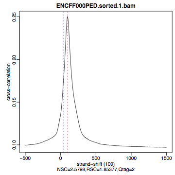
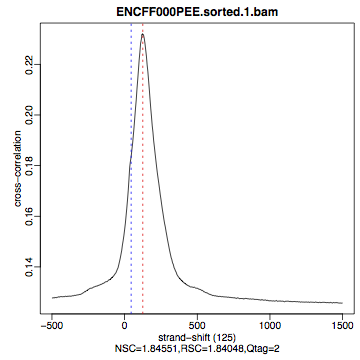
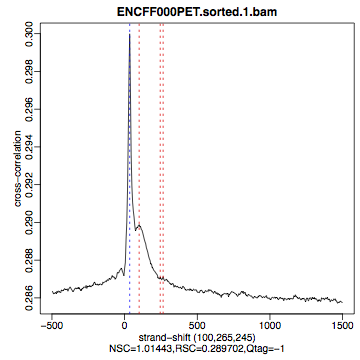
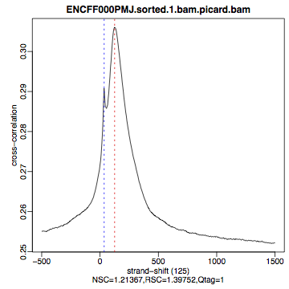
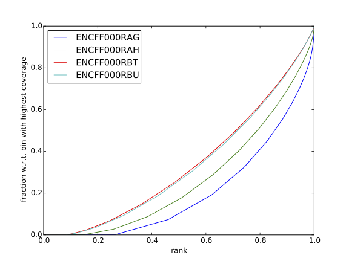
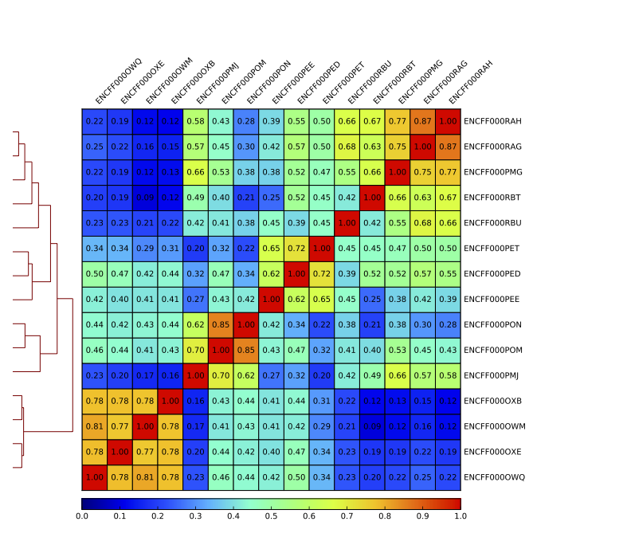
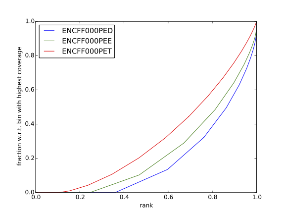

ChIP-seq data processing tutorial¶
Learning outcomes
understand and apply standard data processing of the ChIP-seq libraries
be able to assess quality of the ChIP-seq libraries with a range of quality metrics
work interactively with ChIP-seq signal using Integrative Genome Viewer
Introduction¶
REST (NRSF) is a transcriptional repressor that represses neuronal genes in non-neuronal cells. It is a member of the Kruppel-type zinc finger transcription factor family. It represses transcription by binding a DNA sequence element called the neuron-restrictive silencer element (NRSE). The protein is also found in undifferentiated neuronal progenitor cells and it is thought that this repressor may act as a master negative regulator of neurogenesis. In addition, REST has been implicated as tumour suppressor, as the function of REST is believed to be lost in breast, colon and small cell lung cancers.
One way to study REST on a genome-wide level is via ChIP sequencing (ChIP-seq). ChIP-seq is a method that allows to identify genome-wide occupancy patterns of proteins of interest such as transcription factors, chromatin binding proteins, histones, DNA / RNA polymerases etc.
The first question one needs to address when working with ChIP-seq data is “Did my ChIP work?”, i.e. whether the antibody-treatment enriched sufficiently so that the ChIP signal can be separated from the background signal. After all, around 90% of all DNA fragments in a ChIP experiment represent the genomic background.
The “Did my ChIP work?” question is impossible to answer by simply counting number of peaks or by visual inspection of mapped reads in a genome browser. Instead, several quality control methods have been developed to assess the quality of the ChIP-seq data. These are introduced in the first part of this tutorial.
The second part of the tutorial deals with identification of binding sites and finding consensus peakset.
In the third part we look at the data: mapped reads, coverage profiles and peaks.
All three parts come together to be able to assess the quality of the ChIP-seq experiment and are essential before running any down-stream analysis or drawing any biological conclusions from the data.
Data¶
We will use data that come from ENCODE project. These are ChIP-seq libraries (in duplicates) prepared to analyze REST transcription factor (mentioned in Introduction in several human cell lines and in vitro differentiated neural cells. The ChIP data come with matching input chromatin samples. The accession numbers are listed in Table 1 and individual sample accession numbers are listed in Table 2.
No |
Accession |
Cell line |
Description |
|---|---|---|---|
1 |
ENCSR000BMN |
HeLa |
adenocarcinoma (Homo sapiens, 31 year female) |
2 |
ENCSR000BOT |
HepG2 |
hepatocellular carcinoma (Homo sapiens, 15 year male) |
3 |
ENCSR000BOZ |
SK-N-SH |
neuroblastoma (Homo sapiens, 4 year female) |
4 |
ENCSR000BTV |
neural |
in vitro differentiated (Homo sapiens, embryonic male) |
No |
Accession |
Cell line |
Replicate |
Input |
|---|---|---|---|---|
1 |
ENCFF000PED |
HeLa |
1 |
ENCFF000PET |
2 |
ENCFF000PEE |
HeLa |
2 |
ENCFF000PET |
3 |
ENCFF000PMG |
HepG2 |
1 |
ENCFF000POM |
4 |
ENCFF000PMJ |
HepG2 |
2 |
ENCFF000PON |
5 |
ENCFF000OWQ |
neural |
1 |
ENCFF000OXB |
6 |
ENCFF000OWM |
neural |
2 |
ENCFF000OXE |
7 |
ENCFF000RAG |
SK-N-SH |
1 |
ENCFF000RBT |
8 |
ENCFF000RAH |
SK-N-SH |
2 |
ENCFF000RBU |
Methods¶
Reads were mapped by ENCODE consortium to the human genome assembly version hg19 using bowtie, a short read aligner performing ungapped global alignment. Only reads with one best alignment were reported, sometimes also called “unique alignments” or “uniquely aligned reads”. This type of alignment excludes reads mapping to multiple locations in the genome from any down-stream analyses.
To shorten computational time required to run steps in this tutorial we scaled down dataset by keeping reads mapping to chromosomes 1 and 2 only. For the post peak-calling QC and differential occupancy part of the tutorials, peaks were called using entire data set. Note that all methods used in this exercise perform significantly better when used on complete (i.e. non-subset) data sets. Their accuracy most often scales with the number of mapped reads in each library, but so does the run time. For reference we include the key plots generated analysing the complete data set (Appendix).
Last but not least, we have prepared intermediate files in case some steps fail to work. These should allow you to progress through the analysis if you choose to skip a step or two. You will find all the files in the ~/chipseq/results directory.
Part I: Quality control and alignment processing¶
Before being able to draw any biological conclusions from the ChIP-seq data we need to assess the quality of libraries, i.e. how successful was the ChIP-seq experiment. In fact, quality assessment of the data is something that should be kept in mind at every data analysis step. Here, we will look at the quality metrics independent of peak calling, that is, we start at the very beginning, with the aligned reads. A typical workflow includes:
Alignment Processing: removing dupliated reads, blacklisted “hyper-chippable” regions, preparing normalised coverage tracks for viewing in a genome browser
Strand Cross Correlation¶
Strand cross-correlation is based on the fact that a high-quality ChIP-seq experiment produces significant clustering of enriched DNA sequence tags at locations bound by the protein of interest. Density of the sequence tags mapped to forward and reverse strands is centered around the binding site.
The cross-correlation metric is computed as the Pearson’s linear correlation between tag density on the forward and reverse strand, after shifting reverse strand by k base pairs. This typically produces two peaks when cross-correlation is plotted against the shift value: a peak of enrichment corresponding to the predominant fragment length and a peak corresponding to the read length (“phantom” peak).
We will calculate cross correlation for REST ChIP-seq in HeLa cells using a tool called phantompeakqualtools
module load phantompeakqualtools/1.1
mkdir ~/chipseq/analysis/xcor
cd ~/chipseq/analysis/xcor
run_spp.R -c=../../data/ENCFF000PED.chr12.bam -savp=hela1_xcor.pdf \
-out=xcor_metrics_hela.txt
module unload phantompeakqualtools/1.1
This step takes a few minutes and phantompeakqualtools prints messages as it progresses through different stages of the analysis. When completed, have a look at the output file xcor_metrics_hela.txt. The metrics file is tabulated and the fields are as below with the one in bold to be paid special attention to:
COL1: Filename
COL2: numReads: effective sequencing depth i.e. total number of mapped reads in input file
COL3: estFragLen: comma separated strand cross-correlation peak(s) in decreasing order of correlation. In almost all cases, the top (first) value in the list represents the predominant fragment length.
COL4: corr_estFragLen: comma separated strand (Pearson) cross-correlation value(s) in decreasing order (col3 follows the same order)
COL5: phantomPeak: Read length/phantom peak strand shift
COL6: corr_phantomPeak: Correlation value at phantom peak
COL7: argmin_corr: strand shift at which cross-correlation is lowest
COL8: min_corr: minimum value of cross-correlation
COL9: Normalized strand cross-correlation coefficient (NSC) = COL4 / COL8
COL10: Relative strand cross-correlation coefficient (RSC) = (COL4 - COL8) / (COL6 - COL8)
COL11: QualityTag: Quality tag based on thresholded RSC (codes: -2:veryLow; -1:Low; 0:Medium; 1:High; 2:veryHigh)
For comparison, the cross correlation metrics computed for the entire data set using non-subset data are available at:
cat ../../results/xcor/rest.xcor_metrics.txt
The shape of the strand cross-correlation can be more informative than the summary statistics, so do not forget to view the plot.
compare the plot
hela1_xcor.pdf(cross correlation of the first replicate of REST ChIP in HeLa cells, using subset chromosome 1 and 2 subset data) with cross correlation computed using the non subset data set (figure 1)compare with the ChIP using the same antibody performed in HepG2 cells (figure 2).
To view .pdf directly from Uppmax with enabled X-forwarding:
evince hela1_xcor.pdf &
Otherwise, if the above does not work due to common configuration problems, copy the file hela1_xcor.pdf to your local computer and open locally.
To copy type from a terminal window on your computer NOT logged in to Uppmax:
scp <username>@rackham.uppmax.uu.se:~/chipseq/analysis/xcor/*pdf .
HeLa, REST ChIP |
HeLa, REST ChIP |
HeLa, input, |
|---|---|---|
|  |  |  |
{kind=link}
{kind=link}
{kind=link}
HepG2, REST ChIP |
HepG2, REST ChIP |
HepG2, input, |
|---|---|---|

|
 | 
|
{kind=link}
What do you think? Did the ChIP-seq experiment work?
how would you rate these two data sets?
are all samples of good quality?
which data set would you rate higher in terms of how successful the ChIP was?
would any of the samples fail this QC step? Why?
Alignment processing¶
Now we will do some data cleaning to try to improve the libraries quality. First, duplicated reads are marked and removed using MarkDuplicates tool from Picard . Marking as “duplicates” is based on their alignment location, not sequence.
module load samtools/1.8
module load java/sun_jdk1.8.0_40
module load picard/2.10.3
cd ~
mkdir ~/chipseq/analysis/bam_preproc
cd ~/chipseq/analysis/bam_preproc
java -Xmx64G -jar $PICARD_HOME/picard.jar MarkDuplicates \
I=../../data/ENCFF000PED.chr12.bam O=ENCFF000PED.chr12.rmdup.bam \
M=dedup_metrics.txt VALIDATION_STRINGENCY=LENIENT \
REMOVE_DUPLICATES=true ASSUME_SORTED=true
Check out dedup_metrics.txt for details of this step.
Second, reads mapped to ENCODE blacklisted regions in accession ENCFF000KJP are removed. The DAC Blacklisted Regions aim to identify a comprehensive set of regions in the human genome that have anomalous, unstructured, high signal/read counts in next gen sequencing experiments independent of cell line and type of experiment.
module load NGSUtils/0.5.9
bamutils filter ENCFF000PED.chr12.rmdup.bam \
ENCFF000PED.chr12.rmdup.filt.bam \
-excludebed ../../hg19/wgEncodeDacMapabilityConsensusExcludable.bed nostrand
Third, the processed bam files are sorted and indexed:
samtools sort -T sort_tempdir -o ENCFF000PED.chr12.rmdup.filt.sort.bam \
ENCFF000PED.chr12.rmdup.filt.bam
samtools index ENCFF000PED.chr12.rmdup.filt.sort.bam
module unload samtools/1.1
module unload java/sun_jdk1.8.0_40
module unload picard/1.141
module unload NGSUtils/0.5.9
Finally we can compute the read coverage normalised to 1x coverage using tool bamCoverage from deepTools, a set of tools developed for ChIP-seq data analysis and visualisation. Normalised tracks enable comparing libraries sequenced to a different depth when viewing them in a genome browser such as IGV.
We are still working with subset of data (chromosomes 1 and 2) hence the effective genome size used here is 492449994 (4.9e8). For hg19 the effective genome size would be set to 2.45e9 (see publication.
The reads are extended to 110 nt (the fragment length obtained from the cross correlation computation) and summarised in 50 bp bins (no smoothing).
module load deepTools/2.5.1
bamCoverage --bam ENCFF000PED.chr12.rmdup.filt.sort.bam \
--outFileName ENCFF000PED.chr12.cov.norm1x.bedgraph \
--normalizeTo1x 492449994 --extendReads 110 --binSize 50 \
--outFileFormat bedgraph
module unload deepTools/2.5.1
Cumulative enrichment¶
Cumulative enrichment, aka BAM fingerprint, is yet another way of checking the quality of ChIP-seq signal. It determines how well the signal in the ChIP-seq sample can be differentiated from the background distribution of reads in the control input sample.
Cumulative enrichment is obtained by sampling indexed BAM files and plotting a profile of cumulative read coverages for each. All reads overlapping a window (bin) of the specified length are counted; these counts are sorted and the cumulative sum is finally plotted.
For factors that will enrich well-defined, rather narrow regions (such as transcription factors), the resulting plot can be used to assess the strength of a ChIP, but the broader the enrichments are to be expected, the less clear the plot will be. Vice versa, if you do not know what kind of signal to expect, the fingerprint plot will give you a straight-forward indication of how careful you will have to be during your downstream analyses to separate the noise from meaningful signal.
To compute cumulative enrichment for HeLa REST ChIP and the corresponding input sample:
module load deepTools/2.5.1
plotFingerprint --bamfiles ENCFF000PED.chr12.rmdup.filt.sort.bam \
../../data/bam/hela/ENCFF000PEE.chr12.rmdup.sort.bam \
../../data/bam/hela/ENCFF000PET.chr12.rmdup.sort.bam \
--extendReads 110 --binSize=1000 --plotFile HeLa.fingerprint.pdf \
--labels HeLa_rep1 HeLa_rep2 HeLa_input
module unload deepTools/2.5.1
Have a look at the HeLa.fingerprint.pdf, read deepTools What the plots tell you and answer
does it indicate a good sample quality, i.e. enrichment in ChIP samples and lack of enrichment in input?
how does it compare to similar plots generated for other libraries (shown below)?
can you tell which samples are ChIP and which are input?
are the cumulative enrichment plots in agreement with the cross-correlation metrics computed earlier?
HepG2 cells |
SK-N-SH cells |
|---|---|

|
 |
{kind=link}
Sample clustering¶
To assess overall similarity between libraries from different samples and data sets one can compute sample clustering heatmaps using
multiBamSummary and plotCorrelation in bins mode from deepTools.
In this method the genome is divided into bins of specified size (--binSize parameter) and reads mapped to each bin are counted. The resulting signal profiles are used to cluster libraries to identify groups of similar signal profile.
To avoid very long paths in the command line we will create sub-directories and link preprocessed bam files:
mkdir hela
mkdir hepg2
mkdir sknsh
mkdir neural
ln -s /sw/share/compstore/courses/ngsintro/chipseq/data/bam/hela/* ./hela
ln -s /sw/share/compstore/courses/ngsintro/chipseq/data/bam/hepg2/* ./hepg2
ln -s /sw/share/compstore/courses/ngsintro/chipseq/data/bam/sknsh/* ./sknsh
ln -s /sw/share/compstore/courses/ngsintro/chipseq/data/bam/neural/* ./neural
Now we are ready to compute the read coverages for genomic regions for the BAM files for the entire genome using bin mode with multiBamSummary as well as to visualise sample correlation based on the output of multiBamSummary.
module load deepTools/2.5.1
multiBamSummary bins --bamfiles hela/ENCFF000PED.chr12.rmdup.sort.bam \
hela/ENCFF000PEE.chr12.rmdup.sort.bam hela/ENCFF000PET.chr12.rmdup.sort.bam \
hepg2/ENCFF000PMG.chr12.rmdup.sort.bam hepg2/ENCFF000PMJ.chr12.rmdup.sort.bam \
hepg2/ENCFF000POM.chr12.rmdup.sort.bam hepg2/ENCFF000PON.chr12.rmdup.sort.bam \
neural/ENCFF000OWM.chr12.rmdup.sort.bam neural/ENCFF000OWQ.chr12.rmdup.sort.bam \
neural/ENCFF000OXB.chr12.rmdup.sort.bam neural/ENCFF000OXE.chr12.rmdup.sort.bam \
sknsh/ENCFF000RAG.chr12.rmdup.sort.bam sknsh/ENCFF000RAH.chr12.rmdup.sort.bam \
sknsh/ENCFF000RBT.chr12.rmdup.sort.bam sknsh/ENCFF000RBU.chr12.rmdup.sort.bam \
--outFileName multiBamArray_dT201_preproc_bam_chr12.npz --binSize=5000 \
--extendReads=110 --labels hela_1 hela_2 hela_i hepg2_1 hepg2_2 hepg2_i1 hepg2_i2 \
neural_1 neural_2 neural_i1 neural_i2 sknsh_1 sknsh_2 sknsh_i1 sknsh_i2
plotCorrelation --corData multiBamArray_dT201_preproc_bam_chr12.npz \
--plotFile REST_bam_correlation_bin.pdf --outFileCorMatrix corr_matrix_bin.txt \
--whatToPlot heatmap --corMethod spearman
module unload deepTools/2.5.1
What do you think?
which samples are similar?
are the clustering results as you would have expected them to be?
Part II: Identification of binding sites¶
Now we know so much more about the quality of our ChIP-seq data. In this section, we will
identify peaks, i.e. binding sites
learn how to find reproducible peaks, detected consistently between replicates
prepare a merged list of all peaks detected in the experiment needed for downstream analysis
Peak calling¶
We will identify peaks in the ChIP-seq data using Model-based Analysis of ChIP-Seq MACS2 . MACS captures the influence of genome complexity to evaluate the significance of enriched ChIP regions and is one of the most popular peak callers performing well on data sets with good enrichment of transcription factors ChIP.
Note that peaks should be called on each replicate separately (not pooled across replicates) as these can be later on used to identify peaks consistently found across replicates preparing a consensus peaks set for down-stream analysis of differential occupancy, annotations etc.
To avoid long paths in the command line let’s create links to BAM files with ChIP and input data.
mkdir ~/chipseq/analysis/peak_calling
cd ~/chipseq/analysis/peak_calling
ln -s /sw/share/compstore/courses/ngsintro/chipseq/data/bam/hela/ENCFF000PED.chr12.rmdup.sort.bam \
./ENCFF000PED.preproc.bam
ln -s /sw/share/compstore/courses/ngsintro/chipseq/data/bam/hela/ENCFF000PET.chr12.rmdup.sort.bam \
./ENCFF000PET.preproc.bam
Before we run MACS we need to look at parameters as there are several of them affecting peak calling as well as reporting the results. It is important to understand them to be able to modify the command to the needs of your data set.
Parameters:
-t: treatment-c: control-f: file format-n: output file names-g: genome size, with common ones already encoded in MACS eg. -g hs = -g 2.7e9; -g mm = -g 1.87e9; -g ce = -g 9e7; -g dm = -g 1.2e8. In our case-g = 04.9e8since we are still working on chromosomes 1 and 2 only-q 0.01: q value (false discovery rate, FDR) cutoff for reporting peaks; this is recommended over reporting raw (un-adjusted) p values.
Let’s run MACS2 now. MACS2 prints messages as it progresses through different stages of the process. This step may take more than 10 minutes.
module load MACS/2.1.0
macs2 callpeak -t ENCFF000PED.preproc.bam -c ENCFF000PET.preproc.bam \
-f BAM -g 4.9e8 -n hela_1_REST.chr12.macs2 -q 0.01
module unload MACS/2.1.0
module unload python/2.7.6
The output of a MACS2 run consists of several files. To inspect files type
head -n 50 <filename>
Have a look at the narrowPeak files that we will focus on in the subsequent parts e.g.
head -n 50 hela_1_REST.chr12.macs2_peaks.narrowPeak
These files are in BED format, one of the most used file formats in genomics, used to store information on genomic ranges such as ChIP-seq peaks, gene models, transcription starts sites, etc. BED files can be also used for visualisation in genome browsers, including the popular UCSC Genome Browser and IGV. We will try this later in Visualisation part.
We can simplify the BED files by keeping only the first three most relevant columns e.g.
cut -f 1-3 hela_1_REST.chr12.macs2_peaks.narrowPeak > hela_1_chr12_peaks.bed
Peaks detected on chromosomes 1 and 2 are present in directory /results/peaks_bed. These peaks were detected using complete (all chromosomes) data and therefore there may be some differences between the peaks present in the prepared file hela_1_peaks.bed compared to the peaks you have just detected. We suggest we use these pre-made peak BED files instead of the file you have just created. You can check how many peaks were detected in each library by listing number of lines in each file:
wc -l ../../results/peaks_bed/*.bed
cp ../../results/peaks_bed/*.bed .
What do you think?
can you see any patterns with number of peaks detected and library quality?
can you see any patterns with number of peaks detected and samples clustering?
Reproducible peaks¶
By checking for overlaps in the peak lists from different libraries one can detect peaks present across libraries. This gives an idea on which peaks are reproducible between replicates and can be calculated in many ways, e.g. with BEDTools, a suite of utilities developed for manipulation of BED files.
In the command used here the arguments are:
-a,-b: two files to be intersected-f 0.50: fraction of the overlap between features in each file to be reported as an overlap-r: reciprocal overlap fraction required
Let’s select two replicates of the same condition to investigate the peaks overlap, e.g.
module load BEDTools/2.25.0
bedtools intersect -a hela_1_peaks.chr12.bed -b hela_2_peaks.chr12.bed -f 0.50 -r \
> peaks_hela.chr12.bed
wc -l peaks_hela.chr12.bed
This way one can compare peaks from replicates of the same condition and beyond, that is peaks present in different conditions. For the latter, we need to create files with peaks common to replicates for the cell types to be able to compare. For instance, to inspect reproducible peaks between HeLa and HepG2 we need to run:
bedtools intersect -a hepg2_1_peaks.chr12.bed -b hepg2_2_peaks.chr12.bed -f 0.50 -r \
> peaks_hepg2.chr12.bed
bedtools intersect -a peaks_hepg2.chr12.bed -b peaks_hela.chr12.bed -f 0.50 -r \
> peaks_hepg2_hela.chr12.bed
wc -l peaks_hepg2_hela.chr12.bed
Feel free to experiment more. When you have done all intersections you were interested in unload the BEDTools module:
module unload BEDTools/2.25.0
What can we tell about peak reproducibility?
are peaks reproducible between replicates?
are peaks consistent across conditions?
any observations in respect to libraries quality and samples clustering?
Merged Peaks¶
Now it is time to generate a merged list of all peaks detected in the experiment, i.e. to find a consensus peakset that can be used for downstream analysis.
This is typically done by selecting peaks by overlapping and reproducibility criteria. Often it may be good to set overlap criteria stringently in order to lower noise and drive down false positives. The presence of a peak across multiple samples is an indication that it is a “real” binding site, in the sense of being identifiable in a repeatable manner.
Here, we will use a simple method of putting peaks together with BEDOPS by preparing a peakset in which all overlapping intervals are merged. Files used in this step are derived from the *.narrowPeak files by selecting relevant columns, as before.
These files are already prepared and are under peak_calling directory
module load BEDOPS/2.4.3
bedops -m hela_1_peaks.chr12.bed hela_2_peaks.chr12.bed hepg2_1_peaks.chr12.bed hepg2_2_peaks.chr12.bed \
neural_1_peaks.chr12.bed neural_2_peaks.chr12.bed sknsh_1_peaks.chr12.bed sknsh_2_peaks.chr12.bed \
>REST_peaks.chr12.bed
module unload BEDOPS/2.4.3
wc -l REST_peaks.chr12.bed
In case things go wrong at this stage you can find the merged list of all peaks in the /results directory. Simply link the file to your current directory to go further:
ln -s ../../results/peaks_bed/rest_peaks.chr12.bed ./rest_peaks.chr12.bed
Quality control after peak calling¶
Having a consensus peakset we can re-run samples clustering with deepTools using only peak regions for the coverage analysis in BED mode. This may be informative when looking at samples similarities with clustering and heatmaps and it typically done for ChIP-seq experiments. This also gives an indications whether peaks are consistent between replicates given the signal strength in peaks regions.
Let’s make a new directory to keep things organised and run deepTools in BED mode providing merged peakset we created:
mkdir ~/chipseq/analysis/plots
cd ~/chipseq/analysis/plots
mkdir hela
mkdir hepg2
mkdir sknsh
mkdir neural
ln -s /sw/share/compstore/courses/ngsintro/chipseq/data/bam/hela/* ./hela
ln -s /sw/share/compstore/courses/ngsintro/chipseq/data/bam/hepg2/* ./hepg2
ln -s /sw/share/compstore/courses/ngsintro/chipseq/data/bam/sknsh/* ./sknsh
ln -s /sw/share/compstore/courses/ngsintro/chipseq/data/bam/neural/* ./neural
module load deepTools/2.5.1
multiBamSummary BED-file --BED ../peak_calling/REST_peaks.chr12.bed --bamfiles \
hela/ENCFF000PED.chr12.rmdup.sort.bam \
hela/ENCFF000PEE.chr12.rmdup.sort.bam hela/ENCFF000PET.chr12.rmdup.sort.bam \
hepg2/ENCFF000PMG.chr12.rmdup.sort.bam hepg2/ENCFF000PMJ.chr12.rmdup.sort.bam \
hepg2/ENCFF000POM.chr12.rmdup.sort.bam hepg2/ENCFF000PON.chr12.rmdup.sort.bam \
neural/ENCFF000OWM.chr12.rmdup.sort.bam neural/ENCFF000OWQ.chr12.rmdup.sort.bam \
neural/ENCFF000OXB.chr12.rmdup.sort.bam neural/ENCFF000OXE.chr12.rmdup.sort.bam \
sknsh/ENCFF000RAG.chr12.rmdup.sort.bam sknsh/ENCFF000RAH.chr12.rmdup.sort.bam \
sknsh/ENCFF000RBT.chr12.rmdup.sort.bam sknsh/ENCFF000RBU.chr12.rmdup.sort.bam \
--outFileName multiBamArray_bed_bam_chr12.npz \
--extendReads=110 \
--labels hela_1 hela_2 hela_i hepg2_1 hepg2_2 hepg2_i1 hepg2_i2 neural_1 \
neural_2 neural_i1 neural_i2 sknsh_1 sknsh_2 sknsh_i1 sknsh_i2
plotCorrelation --corData multiBamArray_bed_bam_chr12.npz \
--plotFile correlation_peaks.pdf --outFileCorMatrix correlation_peaks_matrix.txt \
--whatToPlot heatmap --corMethod pearson --plotNumbers --removeOutliers
module unload deepTools/2.5.1
What do you think?
Any differences in clustering results compared to
binmode?Can you think about the clustering results in the context of all quality steps?
Part III: Visualisation of mapped reads, coverage profiles and peaks¶
In this part we will look more closely at our data, which is a good practice, as data summaries can be at times misleading. In principle we could look at the data on Uppmax using installed tools but it is much easier to work with genome browser locally. If you have not done this before the course, install Interactive Genome Browser IGV.
We will view and need the following HeLa replicate 1 files:
~/chipseq/data/bam/hela/ENCFF000PED.chr12.rmdup.sort.bam: mapped reads~/chipseq/data/bam/hela/ENCFF000PED.chr12.rmdup.sort.bam.bai: mapped reads index file~/chipseq/results/coverage/ENCFF000PED.cov.norm1x.bedgraph: coverage track~/chipseq/results/peaks_macs/hela_1_REST.chr12.macs2_peaks.narrowPeak: peaks’ genomic coordinates
and corresponding input files:
~/chipseq/data/bam/hela/ENCFF000PET.chr12.rmdup.sort.bam~/chipseq/data/bam/hela/ENCFF000PET.chr12.rmdup.sort.bam.bai~/chipseq/results/coverage/ENCFF000PET.cov.norm1x.bedgraph
Let’s copy them to local computers, do you remember how? From your local terminal e.g.
scp -r <username>@rackham.uppmax.uu.se:<pathway><filename> .
Open IGV and load files:
set reference genome to
hg19as the reads were mapped using this assemblyload the files you have just copied. Under
File -> Load from Filechoose navigate and choose files. You can select all the files at the same time.
Explore data:
you can zoom in and move along chromosome 1 and 2
go to interesting locations, i.e. REST binding peaks detected in both HeLa samples, available in
peaks_hela.chr12.bedyou can change the signal display mode in the tracks in the left hand side panel. Right click in the BAM file track, select from the menu “display”
squishy; “color by” - read strand and “group by” - read strand
To view the peaks_hela.chr12.bed
# to view beginning of the file
head peaks_hela.chr12.bed
# to view end of the file
tail peaks_hela.chr12.bed
# to scroll-down the file
less peaks_hela.chr12.bed
Exploration suggestions:
go to
chr1:1,233,734-1,235,455andchr2:242,004,675-242,008,035. You should be able to see signal as below
{kind=link}
Figure 4. Example IGV view centered around chr1:1,233,734-1,235,455
{kind=link}
Figure 5. Example IGV view centered around chr2:242,004,675-242,008,035
What do you think?
is the read distribution in the peaks (BAM file tracks) consistent with the expected bimodal distribution?
can you see the difference in signal between ChIP and corresponding input?
do called peaks regions (BED file tracks) overlap with observed peaks (BAM files tracks), i.e. has the peak calling worked correctly?
are the detected peaks associated with annotated genes?
Summary¶
Congratulations!
Now we know how to inspect ChIP-seq data and judge quality. If the data quality is good, we can continue with downstream analysis as in next parts of this course. If not, well… may be better to repeat experiment than to waste resources and time on bad quality data.
Appendix¶
Figures generated during class¶

Figure 6. Cross correlation plot for REST ChIP in Hela cells, replicate 1, chromosome 1 and 2.

Figure 7. Sample clustering (pearson) by reads mapped in merged peaks; only chromosomes 1 and 2 included.

Figure 8. Fingerprint plot for REST ChIP in Hela cells, replicate 1, chromosome 1 and 2.

{kind=link}
Figure 9. Sample clustering (spearman) by reads mapped in bins genome-wide; only chromosomes 1 and 2 included.
Figures generated using complete dataset¶
{kind=link}
Figure 10. Cumulative enrichment in HeLa replicate 1, aka bam fingerprint.

Figure 11. Sample clustering (spearman) by reads mapped in bins genome-wide.

Figure 12. Sample clustering (pearson) by reads mapped in merged peaks.
Written by: Agata Smialowska
Contributions by: Olga Dethlefsen